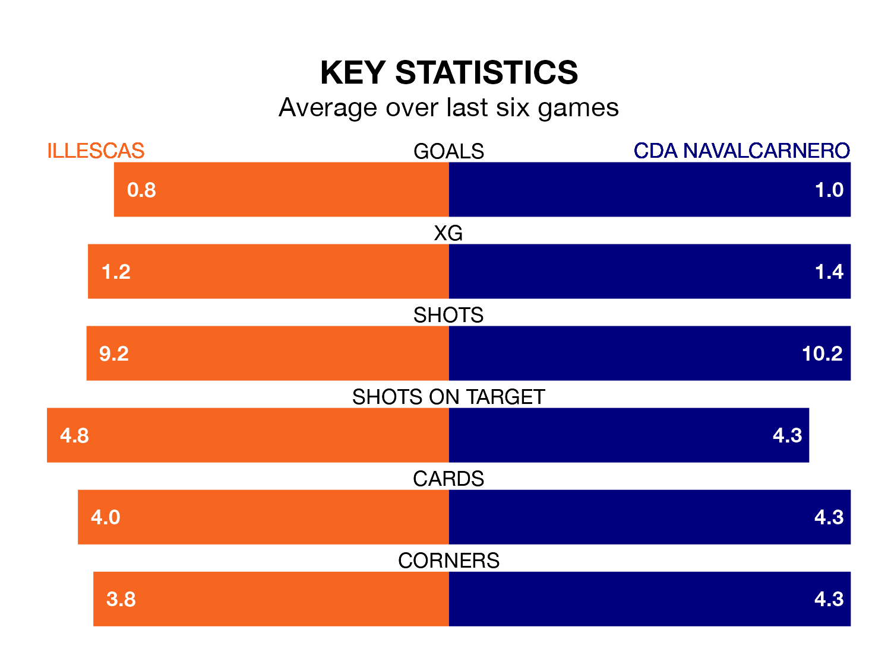

Mid-season relegation candidates CDA Navalcarnero face a challenge away against high-flying Illescas at Estadio Municipal de Illescas on Sunday.
CDA Navalcarnero are 15th in the Segunda División RFEF Group 5 table, and have picked up five wins and eight draws in their 22 games to date.
Illescas, meanwhile, are third in the standings with 37 points, having won 10 and drawn seven, and are two points behind table-toppers SS Reyes.
With 27 goals in 22 games so far this season, Illescas are scoring more than average in the league with 1.2 goals per game. And they are conceding fewer than average, letting in 19 goals at a rate of 0.9 per game.
CDA Navalcarnero, meanwhile, are below average scorers, with 1.0 goal per game, compared to a league average of 1.1. They have conceded 1.2 goals per game.
The home team are in mixed form in the Segunda División RFEF Group 5, with two wins and three draws from their last six games.
And also with two wins and three draws over that period, the visitors' form is identical – they have both taken nine points from 18.
Illescas's last match was on February 11, a 3-2 win against CD Numancia, with Daniel Moreno Arévalo, Jorge Cortázar Blázquez and Víctor García Mingo getting the goals for Illescas.
CDA Navalcarnero drew 1-1 with Atlético Paso last time out, also on February 11, with Dan Ojog on the scoresheet.
Updated: 12:06 (UTC), 15/02/24